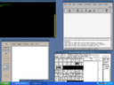

Screenshots
|
(254 KiB) 2015-02-01 |
A mixture of X applications (emacs, gitk and xterm) and Windows applications (explorer and firefox) in multiwindow mode on Windows 8.1 |
![[screenshot]](cygx-openbox-20150201.png)
(168 KiB) 2015-02-01 |
xfce4-terminal and emacs under the Openbox window manager in windowed mode |
|
(846 KiB) 2015-02-01 |
An XDMCP session from Windows 8.1 to a remote Fedora host X -query constantine-vm -once
|
![[screenshot]](cygx-xtow-alphademo-20130805.png)
(967 KiB) 2013-08-05 |
Semi-transparent X client windows drawn by the XtoW window manager over an Internet Explorer window on Windows 7 |
|
(226 KiB) 2009-06-20 |
Cygwin/X running in Multi-window mode, with various GLX clients using hardware-accelerated OpenGL using the native WGL interface. |
|
(65 KiB) 2003-12-24 |
Cygwin/X running in Multi-Window mode (written by Kensuke Matsuzaki) showing the Exit Confirmation dialog box. |
|
(69 KiB) 2003-12-24 |
Cygwin/X running in Multi-Window mode showing the Tray Menu written by Earle F. Philhower III. Preferences for the Tray Menu are stored in ~/.XWinrc or in /etc/X11/system.XWinrc, which is formatted as in this example .XWinrc file. |
|
(102 KiB) 2003-12-24 |
Cygwin/X running in Multi-Window mode and running gv locally, ported by Dr. Volker Zell. |
|
(79 KiB) 2003-12-24 |
Cygwin/X running in Multi-Window mode and running xfig and ddd locally. |
|

(66 KiB) 2003-12-24 |
Cygwin/X running without window decoration with the openbox window manager, gv, xfig, and ddd all running locally. |
|
(137 KiB) 2003-12-24 |
Cygwin/X running in Rootless mode (written by Kensuke Matsuzaki) with the WindowMaker window manager running locally. |

(118 KiB) 2003-12-24 |
Cygwin/X running in Rootless mode with the fvwm2 window manager running locally. |
|
(124 KiB) 2003-12-24 |
Cygwin/X running in Rootless mode with the openbox window manager running locally. |

(217 KiB) 2003-12-24 |
Cygwin/X logged into a Debian Linux machine running KDE 3.1 via XDMCP. |
|
(36 KiB) 2003-12-24 |
Cygwin/X running in 8 bits per pixel Fullscreen mode with the openbox window manager, ddd, and emacs showing 'list-colors-display' all running locally. |
{kind=link}
{kind=link}
{kind=link}
{kind=link}
{kind=link}
{kind=link}
{kind=link}
{kind=link}
{kind=link}
{kind=link}
{kind=link}
Submit screenshots for this gallery by uploading them to your favourite image hosting service, and mailing a link to jturney at cygwin.com